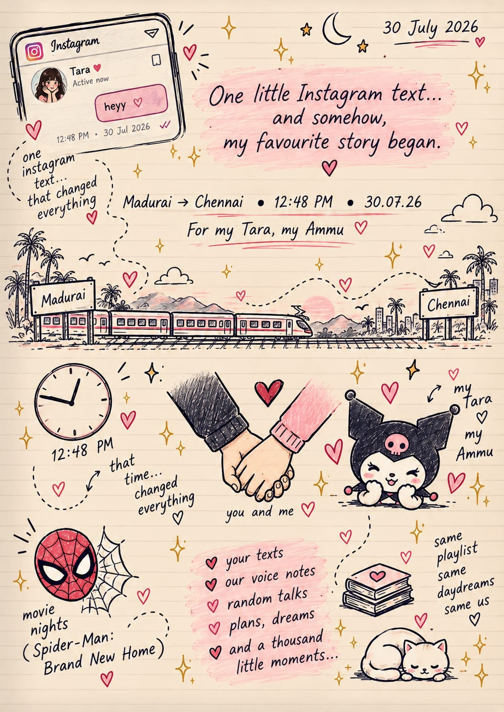

a thousand little moments, all in one place
gathered with love
The things we keep.
SHOW ME
A PAGE FROM OUR STORY
Your diary
This page is waiting for its first little memory.
add one to this chapterswipe to turn · arrow keys work too
Ghaziabad··········♡··········Chennai